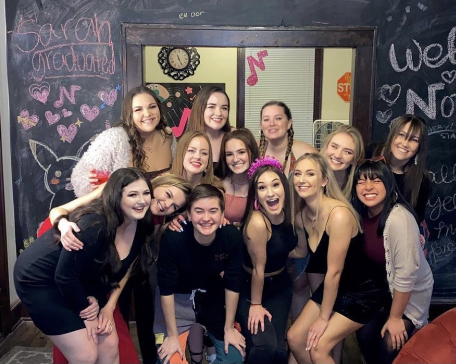
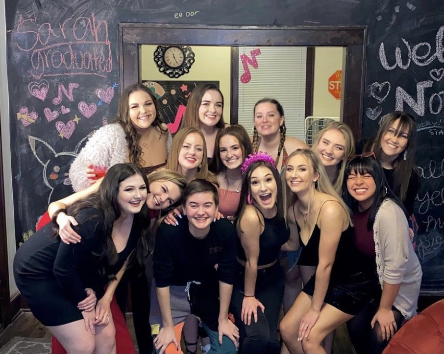
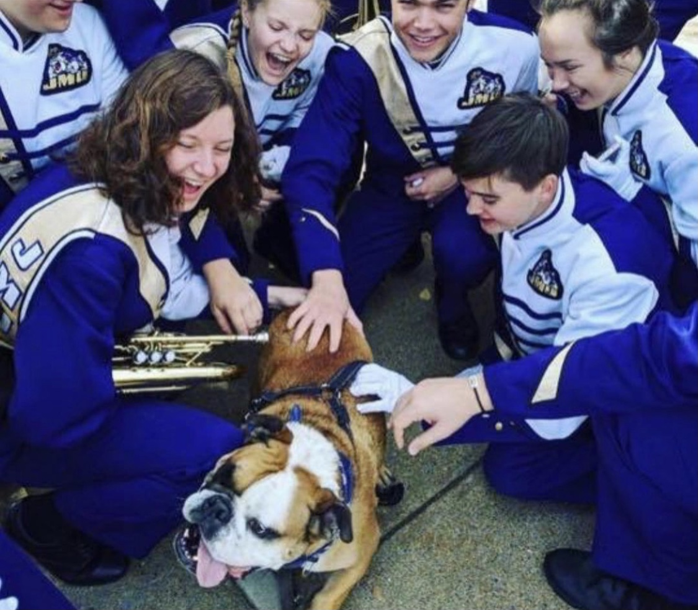
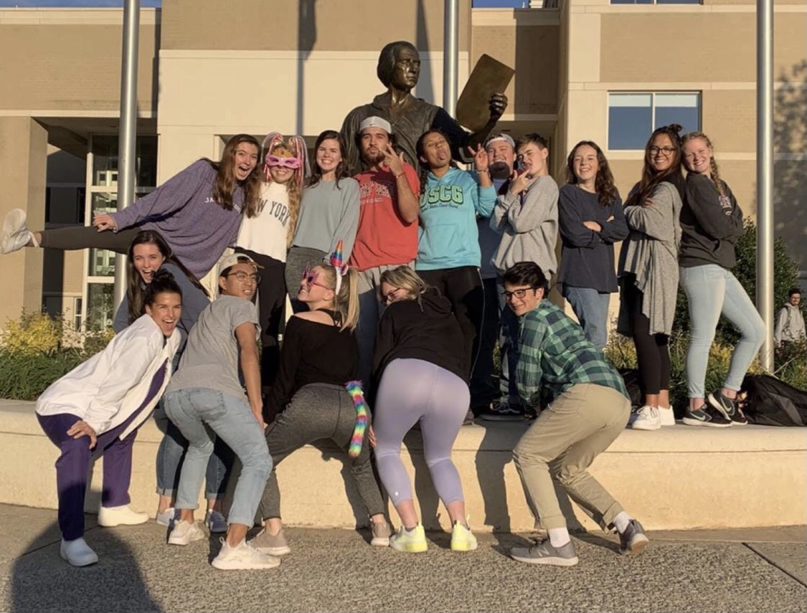
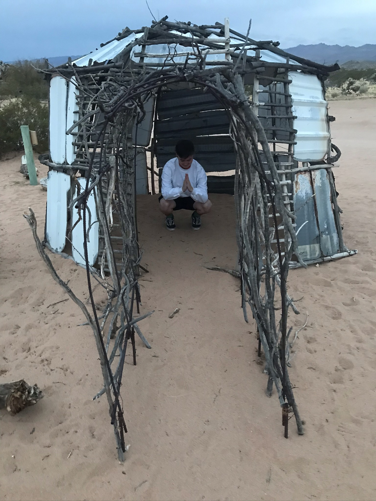
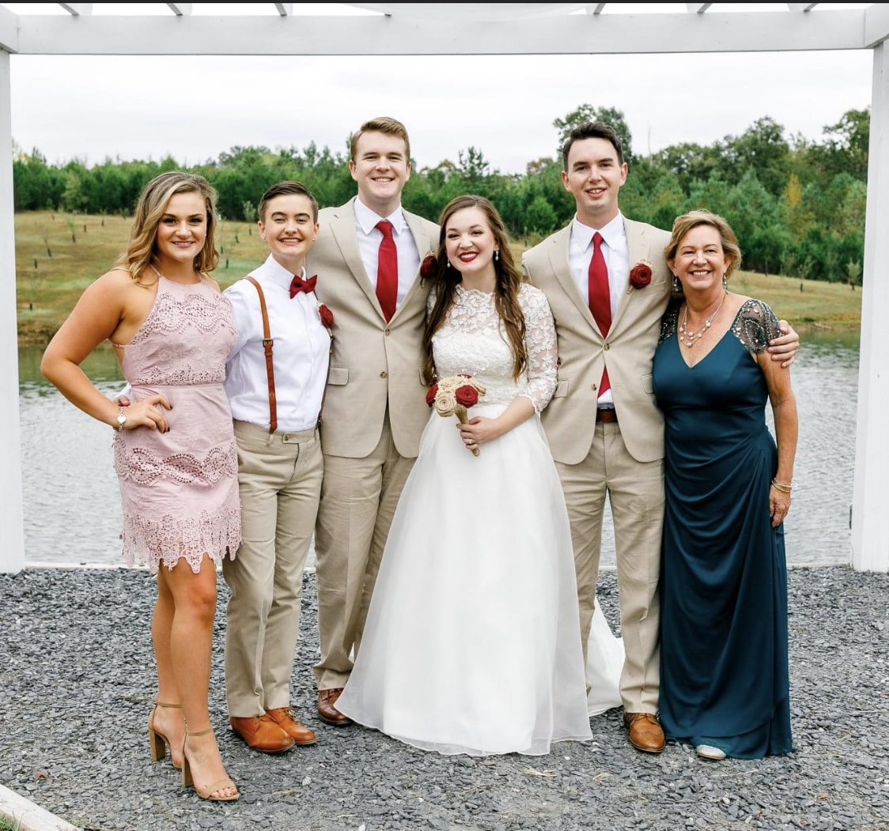
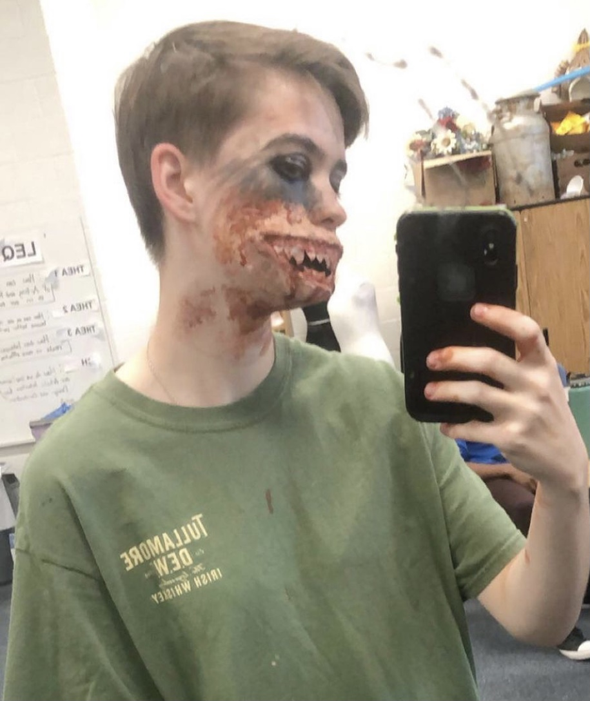

Spring 2021
Just a quick little Intro- I am a sophomore ISAT student at James Madison University. Whenever I'm not studying,
you can likely find me hanging out with my students orgs, either making music or volunteering in the Harrisonburg
community. Although I grew up in Manassas, Va, I now reside in Richmond during the Summer months with my sister and brother-in-law.
I'm a huge outdoorsman and would love to compete on Survivor someday.
.jpeg) 

I have been a tenor in the the JMU a capella group Note-oriety since fall semester of my freshman year. Although I have been singing my entire life, I have grown so much more with these ladies than I ever have as both a musician and a friend. I consider them my second family at this point and I am so thankful to have them in my life. Had I not auditioned for this group, I never would have met my absolute ride or die, best friend in the whole world, Caroline, (she's the blonde one in the second row). She is literally my everything and has gotten me THROUGH it. She represents everything Note-oriety is about: sisterhood, dedication, and empowerment. ALSO (shameless plug) We recently came out with a new album called "Note to Self" that you should ABSOLUTELY check out!

I joined the MRDs Mellophone section the fall of my freshman year. I've been in marching band since eighth grade, meaning I just completed my 7th consecutive marching season. Not only is band super fun and rewarding, but the people in the program are really what make it so special. It's very surreal to come to JMU as a freshman and feel like you already have 465 new best friends (before classes even start), and the comradery really makes the shows and the messages behind them that much more meaningful.

I pledged the community service fraternity Alpha Phi Omega the fall of my freshman year. Soon after initiation, I switched my major to ISAT so that I could study environmental sustainability. I mainly did this after being inspired by my inherited service project Vine and Fig. Vine and Fig is a property in downtown Harrisonburg that serves a few purposes. There are seven buildings on the property that serve as housing for those who Vine and Fig take in. Other than being a sort of shelter, there are a number of sustainability projects going on at all times aroud the property, and I go there once a week and help out with whatever new project were doing that week (whether it be digging a ditch, cutting down trees, or building a chicken tractor).

One of my favorite things to do (when the world is normal) is travel, specifically to national parks. So far, I've been to 8, with my favorite's being the Joshua Tree Forest and the Grand Canyon. Honestly, I will go anywhere if it means I can camp, hike, rock climb, or really do anything outside. Fun Fact: I've actually completed the third hardest white water rafting course in the country in West Virginia.

My siblings are my absolute best friends in the whole entire world. They have always loved and accepted me for me and have taught me what unconditional love really is. I have an older sister, Maddy, who is incredibly successful in every sense of the word. She is super dope and I live with her and my brother-in-law, Dane, in Richmond whenever I go on break. I have an older brother, Damien, who has a full ride to Georgetown, and is studying Intellectual Property Law, and is also engaged to his middle school girlfriend, Virginia. And last but certainly not least, my brother, Roman, is the smartest dude you will EVER meet. He is constantly developing new hobbies and coming up with new business ideas. He is the proud co-owner of White Rhino Construction, so if anybody needs a new (free) roof, give him a call (and mention that I sent you, haha). In all honesty they are my everything and I would not be here without them, and (obviously) they have set the bar for success pretty high, so they have served as fantastic role models for me and I look up to each of them for very different reasons. Side note: we are all musically inclined and our favorite bonding activity is definitely making music together. All in all, they're awesome.

I'm missing 9 adult teeth and am wearing fake teeth in all of these pictures
I won a national theatre award for costume Design
I am weirdly really good at stage makeup even though I hate wearing regular makeup (shown above)
I identify as non-binary
Me and my roommates share a cat named Winnie and I'm obsessed with her
I drive for UberEats to make a living
I love witchy stuff (crystals, tarot, astrology)
I'm getting kinda good at cooking haha